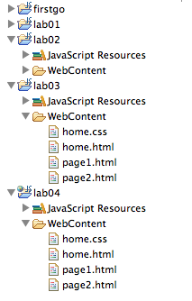
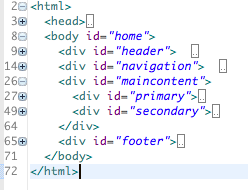
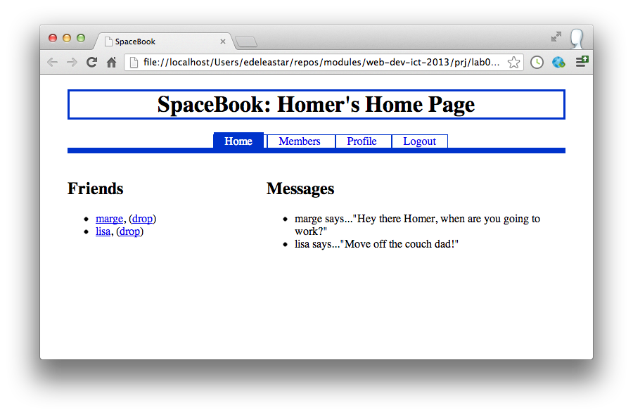
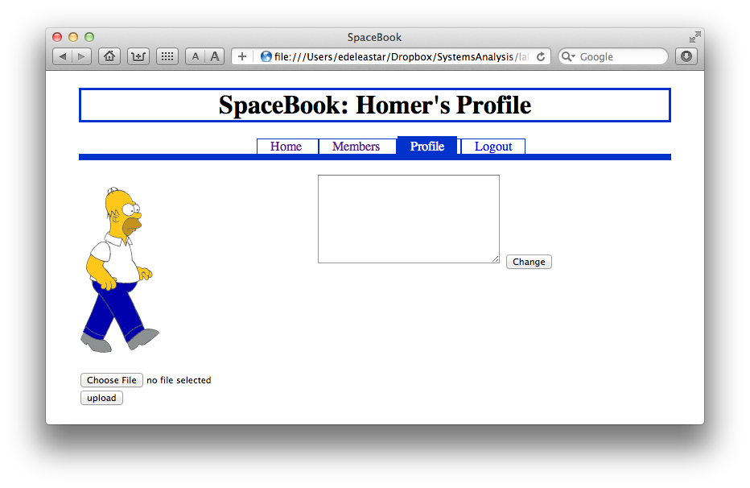
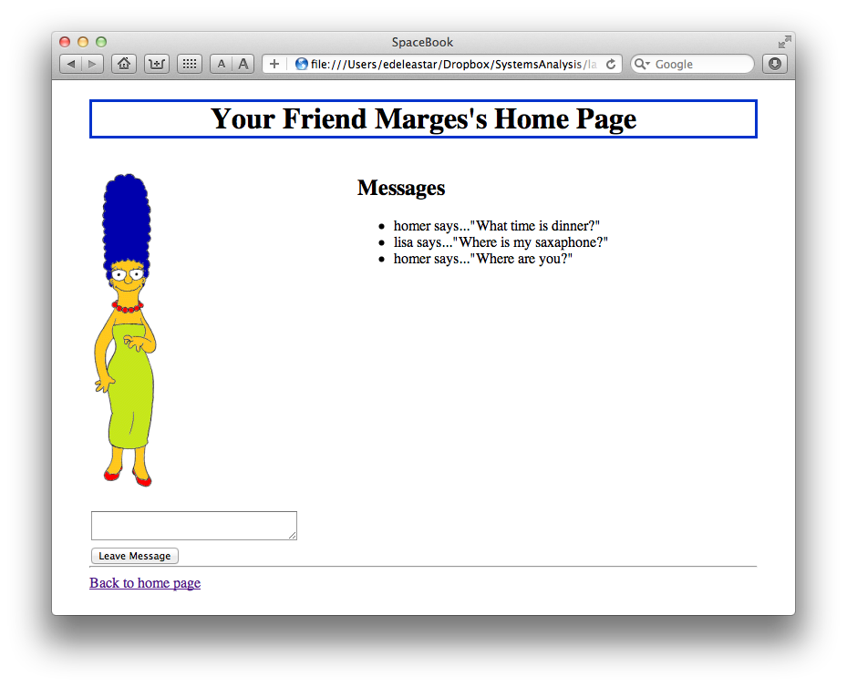
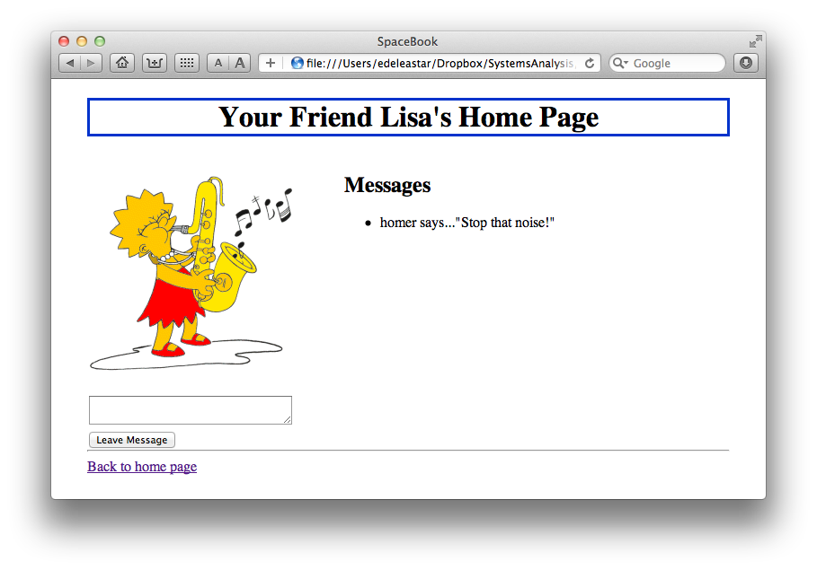
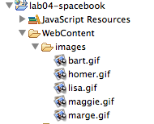
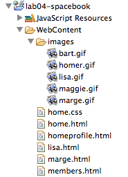

Objectives
Restructure the output of the last lab to participate in a tabbed navigation structure, and then produce a simple application mockup using these techniques. Do this by introduce a simple tabbed design into the site to provide the user with the visual metaphor for navigation. We then 'wire-up' these tabs to lead the user through the site. We will do this twice: once for the example content we laid out in last weeks lab. Then we will build a completely different site, using the same CSS rules.
Setup
Create a new Eclipse project - select project type to be "Static Web Project" again, and call this project "lab04". Copy over the content from the project 'lab03' from last week. In Eclipse project explorer, your workspace should look something like this:

If you dont have lab03 completed (with the exercises), these are the four files we generated in that project:
In your browser, you can select 'save link as' or equivalent and save these into your own workstation. To do this you will first have to locate the actual folder in which the lab04 project is stored, save the four files into that folder, and the select 'File->Refresh' in eclipse (with the lab04 project selected) for the files to appear.
Alternatively, just save to the desktop and drag/drop into the eclipse project.
For the remainder of this lab, we will work away in lab04 project.
Navigation
With a shared navigation structure like this, we may wish to give the readers a visual clue as to weather the link is in fact meaningful or not. For instance, if we are on the home page, since it is dedicated to Mauris, the text "Mauris" in the bullet points, would not be a link as a link for this text would open the same page. The same applies to the others pages (i.e, page1.html and page2.html). In other words, links to the current page should be inactive.
We can do this by just removing the relevant link from each page: i.e.
delete the <a> tags for the text Mauris from home.html,
-
"Cras" from page1.html
-
"prion" from page2.html
Leave the list elements in place however. The site should now look like this:
Tabs
Make sure the 'navigation' division is located towards the top of the page structure between the header and the maincontent. (If you copied the output of last weeks lab, it will be near the end)If we were to take a view of any of the pages using the folding feature if eclipse, we would like to see this:

Now adjust the style sheet as follows:
#maincontent
{
width: 100%;
}
#navigation
{
width: 100%;
}
We have removed the float from maincontent, made it 100% width (of its parent), and also made navigation 100%. Save and view the results.
We would like to target a style at the list element. First we give each of the ul's, in each of the pages, an ID of "tabs":
<div id="navigation">
<ul id="tabs">
<li>Mauris</li>
Now introduce the following rule into the CSS:
#tabs
{
border-bottom: .5em solid #0033CC;
margin: 30;
padding: 30;
}
This sets up a border along the bottom, and a set of margin and padding settings. Your site should now look like this:
We can bring in the following rule to have the list itself appear on a single row.
#tabs li
{
display:inline;
}
Incorporate this change and observe the results. We can further enhance the list by giving each entry a border:
#tabs li
{
display:inline;
border-top: .1em solid #03c;
border-left: .1em solid #03c;
border-right: .1em solid #03c;
}
Our navigation is now starting to look more professional:
Enhanced Tabs
In this series of adjustments, we will enhance the emphasis on the currently selected tab. Look at the final version we are about to prepare, and contrast it with your current work:
First we introduce a rule targeted at the hyperlinks within the tabs section:
#tabs li a
{
text-decoration: none;
padding: 0.25em 1em;
color: #00202;
}
View the results. Note that it seems to enhance the size of the list elements that contain a hyerperlink (the \<a> elements). One last stage is needed to get the precise effect we are looking for, but before we introduce the required rule, we need to change the list elements themselves.Specifically, we need two things:
-
Give an unique ID to each page
-
Give a unique ID to each list element
For the all of the pages, we need to introduce the ID as an attribute of the
tag. So for home.html: <body id="home">
page1.html:
<body id="page1">
and page2.html:
<body id="page2">
These changes allow us to formulate rules targeted at specific pages, using the IDs we have just defined. For the list in each page then, replace the current first three elements with the following:
<li id="tabhome"><a href="home.html">Mauris </a></li>
<li id="tab1"><a href="page1.html">Cras </a></li>
<li id="tab2"><a href="page2.html">Proin</a></li>
Here we are giving each element a unique ID. Take it for a test drive, it should look like this
All the IDs we have just introduced have not been deployed to good effect yet. However, you will note from this last version that we are missing a visual clue as to which tab is currently active (i.e. which page are we on). This is the purpose of this rule here where we define a rule for each tab that corresponds to the current page (i.e., the page being viewed):
#home #tabs li#tabhome a, #page1 #tabs li#tab1 a, #page2 #tabs li#tab2 a
{
padding: 0.25em 1em;
background-color: #03c;
color: #fff;
}
The effects can be seen here:
Study this rule carefully, it is probably the most complex rule we have seen to date
Spacebook Preview
We move on now to build a 'mockup' of a web application we are about to study. Here is a preview (images only) of the site/application:





As you can see, it is a simplified social network application, with users having very simple profiles, 'friends', and a rudimentary messaging system. Also notice that the tabs/navigation structure seem familiar. Before we create the projects, here are some images we will need:


We will need these images when constructing the site, so right click to download to your workstation.You will be using these images in the site in the next few steps.
Spacebook Project
Create a new project called 'lab04-spacebook', and copy in the images from the last step into an images folder in your project:

This can be achieved by just dragging/dropping the images from explorer/finder directly into a folder called images in the eclipse project.
All of the pages we are about to create will be based on the following template:
<!DOCTYPE html>
<html>
<head>
<title>SpaceBook</title>
<link type="text/css" rel="stylesheet" href="home.css" media="screen" />
</head>
<body id="someid">
<div id="header">
<h1>
</h1>
</div>
<div id="navigation">
<ul id="tabs">
<li id="main"> <a href="home.html">Home</a> </li>
<li id="members"> <a href="membership.html">Members</a> </li>
<li id="profile"> <a href="homeprofile.html">Profile</a> </li>
<li id="logout"> <a href="login.html">Logout</a> </li>
</ul>
</div>
<div id="maincontent">
<div id="primary">
</div>
<div id="secondary">
</div>
</div>
<div id="footer">
</div>
</body>
</html>
Inspect it carefully and note the major sections. We have already set up the appropriate navigation structure in the "navigation" division.
Spacebook Skeleton
Taking the template we have just inspected:
Create 3 html files in view containing a copy of this template, to be called:
-
home.html
-
membership.html
-
homeprofile.html
Also copy the home.css from the lab04 project. The css file needs to be amended so that the id rule that begins with:
#home #tabs li#tabhome a, #page1 #tabs li#tab1 a, #page2 #tabs li#tab2 a
now reads as follows:
#home #tabs li#main a, #members #tabs li#members a, #homeprofile #tabs li#profile
Open home.html in a web browser. Verify that three of the four tabs work (logout should not work yet). The site should look like this:
Although the tabs work the are not correctly highlighted. This is because each of the three pages does not have the correct id. This id is used in the stylesheet to make sure that the "current" tab is highlighted.
Change each document as follows:
home.html:
<body id="home">
members.html
<body id="members">
homeprofile
<body id="homeprofile">
Verify that the navigation/tabs now behave as expected. It should look like this:
Home
We will now create some static content to simulate our live "SpaceBook" site. In Home.html, insert the following content into the "primary" division of home.html:
<h2> Friends </h2>
<ul>
<li><a href="marge.html">marge</a>, (<a href="drop/marge">drop</a>)</li>
<li><a href="lisa.html">lisa</a>, (<a href="drop/lisa">drop</a>)</li>
</ul>
and into the "secondary" division:
<h2> Messages </h2>
<ul>
<li>marge says..."Hey there Homer, when are you going to work?"</li>
<li>lisa says..."Move off the couch dad!"</li>
</ul>
For the "footer" a simple horizontal bar will suffice:
<hr />
Finally, set an appropriate header:
<div id="header">
<h1>
SpaceBook: Homer's Home Page
</h1>
</div>
Test the page - if should look like this:
Members, Profile
For members.html, the following "primary" content:
<h2> Members </h2>
<ul>
<li>marge [<a href="home.html">follow</a>]</li>
<li>bart [<a href="home.html">follow</a>]</li>
<li>lisa [<a href="home.html">follow</a>]</li>
<li>maggie [<a href="home.html">follow</a>]</li>
</ul>
For the "footer" a the same horizontal bar:
<hr />
Finally, set an appropriate header:
<div id="header">
<h1>
SpaceBook's Members
</h1>
</div>
The finished page should be like this:
Now for homeprofile, "primary" is:
<p>
<img src="images/homer.gif"/>
</p>
<form action="homeprofile/upload" method="post" enctype="multipart/form-data">
<input type="file" name="userfile" value="" />
<input type="submit" name="submit" value="upload" />
</form>
you will need to bring in this image here:
The secondary is:
<div id="secondary">
<form action="homeprofile/changetext" method="post">
<textarea name="profiletext" cols="30" rows="8" ></textarea>
<input type="submit" name="submit" value="Change" />
</form>
</div>
and the footer as before:
<hr />
Finally, set an appropriate header:
<div id="header">
<h1>
SpaceBook: Homer's Profile
</h1>
</div>
Finished page should be like this:
Friend Profile
On the home page, the links to "lisa" and "marge" dont lead anywhere. Bring in these two pages into your project:
- lisa.html:
<!DOCTYPE html>
<html>
<head>
<title>SpaceBook</title>
<link type="text/css" rel="stylesheet" href="home.css" media="screen" />
</head>
<body id="profile">
<div id="header">
<h1>
Your Friend Lisa's Home Page
</h1>
</div>
<div id="maincontent">
<div id="primary">
<p>
<img src="images/lisa.gif"/>
</p>
<form action="leavemessage/marge" method="post">
<textarea name="message" cols="30" rows="2" ></textarea>
<input type="submit" name="submit" value="Leave Message" />
</form>
</div>
<div id="secondary">
<h2> Messages </h2>
<ul>
<li>homer says..."Stop that noise##"</li>
</ul>
</div>
</div>
<div id="footer">
<hr/>
<a href="home.html">Back to home page</a>
</div>
</body>
</html>
- marge.html
<!DOCTYPE html>
<html>
<head>
<title>SpaceBook</title>
<link type="text/css" rel="stylesheet" href="home.css" media="screen" />
</head>
<body id="profile">
<div id="header">
<h1>
Your Friend Marges's Home Page
</h1>
</div>
<div id="maincontent">
<div id="primary">
<p>
<img src="images/marge.gif"/>
</p>
<form action="leavemessage/marge" method="post">
<textarea name="message" cols="30" rows="2" ></textarea>
<input type="submit" name="submit" value="Leave Message" />
</form>
</div>
<div id="secondary">
<h2> Messages </h2>
<ul>
<li>homer says..."What time is dinner?"</li>
<li>lisa says..."Where is my saxaphone?"</li>
<li>homer says..."Where are you?"</li>
</ul>
</div>
</div>
<div id="footer">
<hr/>
<a href="home.html">Back to home page</a>
</div>
</body>
</html>
You will need these two images:
Note that the template used in these two pages is slightly different - there is no navigation division.Also, note the change in the footer.
Verify that your static version of SpaceBook looks like this:
Exercises
Completed Lab
Your project might now look like this in eclipse:

This is a complete archive of the project if you are having difficulty:
This can be downloaded, expanded and imported into eclipse. It will only import, however, if you do NOT already have a project named lab04-spacebook in your workspace already. If you do, then you will have to rename that project first to something else.
Logout
Logout is yet to be implemented. Implement a place holder page now - what might it contain? Also, the drop link (on the home page) does not lead anywhere. Where might this link go?
Forms
There are two elements in the site we have not encountered before
-
<form> -
<input>
These appear in the homeprofile and in marges and lisas pages. These elements are part of the "form" elements in html
You should read this page here for a general introduction:
And this outline of the "input" element:
In particular, you should review the "types", and in particular the "submit" type: